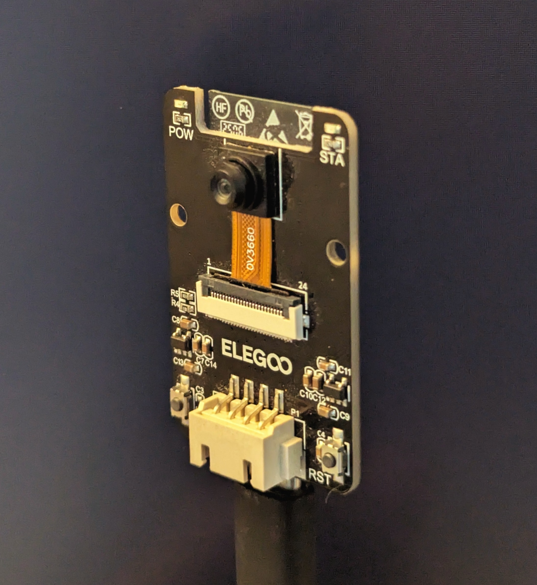
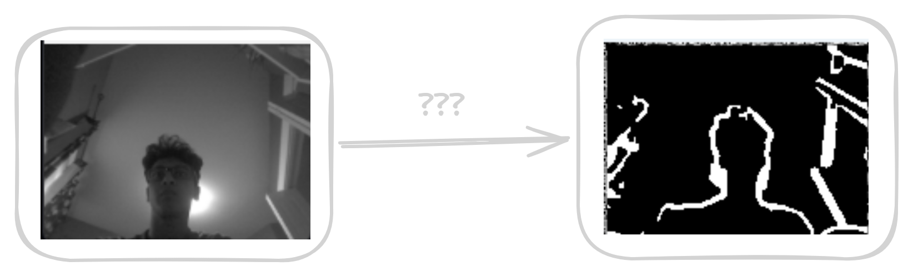
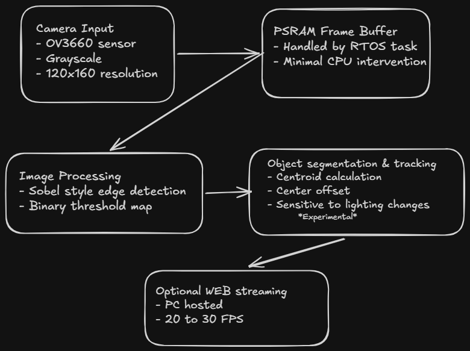

Lightweight embedded computer vision system built on ESP32-CAM using FreeRTOS and custom image processing for object segmentation built to answer: How much CV capability can fit on a $10 microcontroller?
Project start: Dec 30, 2025
Status: Complete — potential future updates

This project explores lightweight computer vision on the ESP32-CAM MCU, a platform with severe memory and compute constraints compared to any conventional CV setup. Frames are processed directly on-device using sobel edge detection and binary segmentation, with no offloading to a host machine.
The core question driving the project: could a $10 microcontroller meaningfully detect and track objects in real time? The answer required careful tradeoffs across resolution, algorithm complexity, and RTOS task design.

ESP32-CAM with OV3660 image sensor. Frames are captured in grayscale QQVGA (160x120) for processing efficiency. PSRAM is used for frame buffering while SRAM handles active processing tasks.
FreeRTOS tasks are split between image capture and image processing using queues for inter-task communication. This separation prevents blocking and keeps frame capture consistent regardless of processing load.
The CV pipeline uses a lightweight Sobel-style edge detection kernel optimized for embedded execution, avoiding the floating-point overhead of standard implementations. Edge pixels are thresholded into a binary map which feeds into object segmentation and centroid tracking.

Separate CPU cores handle frame acquisition, buffering, and processing using FreeRTOS task pinning, minimizing CPU overload and avoiding pipeline stalls between capture and analysis stages.
Grayscale-only, low-resolution image formats reduce per-frame memory footprint significantly. This was critical to keep processing within PSRAM and SRAM constraints while maintaining a usable frame rate.
Recieved 160x120 frame on PC webserver:
Processed frames are streamed over WiFi to a Python server running on a host PC, using the ESP32's built-in WiFi capabilities. This allowed real-time visual debugging without adding display hardware to the constrained embedded platform. Streaming should be disabled to allow for maximum image processing speed.
Initial centroid calculations were significantly inaccurate due to gaps in the edge detection output causing fragmented contours. This was resolved after systematic review and parameter tuning of the image processing pipeline.
Threshold tuning proved difficult due to lighting variation and sensor noise. The issue is minimized in constant-brightness environments but remains an open problem. adaptive thresholding is a planned future improvement.
| Parameter | Value |
|---|---|
| Resolution | 160 × 120 (QQVGA) |
| Pixel Format | Grayscale |
| Processing Method | Sobel Edge Detection + Segmentation |
| RTOS | FreeRTOS (dual-core task split) |
| Streaming | WiFi → Python host server |